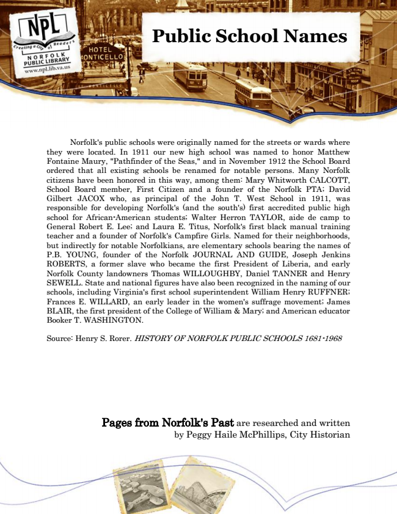

Public School Names
Norfolk's public schools were originally named for the streets or wards where they were located. In 1911 our new high school was named to honor Matthew Fontaine Maury, "Pathfinder of the Seas," and in November 1912 the School Board ordered that all existing schools be renamed for notable persons. Many Norfolk citizens have been honored in this way, among them: Mary Whitworth CALCOTT, School Board member, First Citizen and a founder of the Norfolk PTA; David Gilbert JACOX who, as principal of the John T. West School in 1911, was responsible for developing Norfolk's (and the south's) first accredited public high school for African-American students; Walter Herron TAYLOR, aide de camp to General Robert E. Lee; and Laura E. Titus, Norfolk's first black manual training teacher and a founder of Norfolk's Campfire Girls. Named for their neighborhoods, but indirectly for notable Norfolkians, are elementary schools bearing the names of P.B. YOUNG, founder of the Norfolk JOURNAL AND GUIDE, Joseph Jenkins ROBERTS, a former slave who became the first President of Liberia, and early Norfolk County landowners Thomas WILLOUGHBY, Daniel TANNER and Henry SEWELL. State and national figures have also been recognized in the naming of our schools, including Virginia's first school superintendent William Henry RUFFNER; Frances E. WILLARD, an early leader in the women's suffrage movement; James BLAIR, the first president of the College of William & Mary; and American educator Booker T. WASHINGTON.
Source: Henry S. Rorer. HISTORY OF NORFOLK PUBLIC SCHOOLS 1681-1968
Pages from Norfolk's Past are researched and written by Peggy Haile McPhillips, City Historian